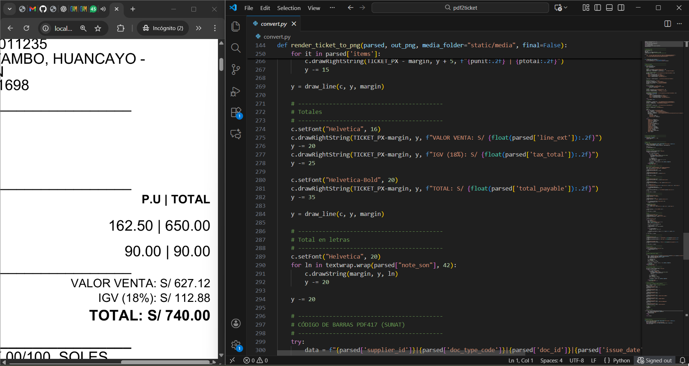
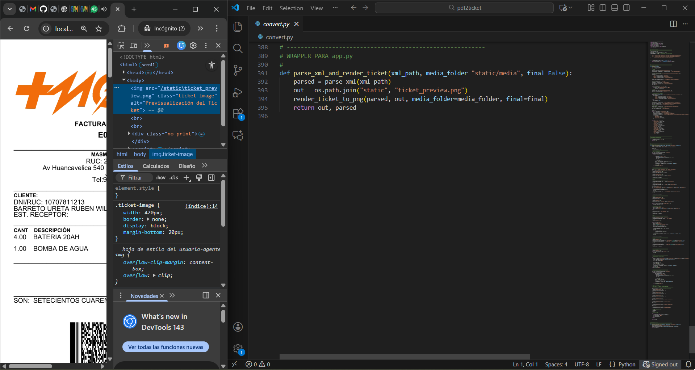

Lectura y Procesamiento del XML SUNAT
def parse_xml(xml_path):
tree = ET.parse(xml_path)
root = tree.getroot()
# EMISOR
supplier = root.find('cac:AccountingSupplierParty', NS)
supplier_id = _findtext(supplier, './/cbc:ID')
supplier_name = _findfindtext = _findtext(supplier, './/cbc:RegistrationName')
# Establecimiento del Emisor
est_addr = supplier.find('.//cac:PartyLegalEntity/cac:RegistrationAddress', NS)
est_emisor = {
"line": _findtext(est_addr, 'cbc:Line'),
"district": _findtext(est_addr, 'cbc:District'),
"city": _findtext(est_addr, 'cbc:CityName'),
"region": _findtext(est_addr, 'cbc:CountrySubentity')
}
Se realiza la lectura del archivo XML generado por SUNAT, extrayendo datos clave como serie, número y fecha del comprobante, respetando los namespaces oficiales.

Procesamiento de Totales e Impuestos
c.setFont("Helvetica", 16)
c.drawRightString(TICKET_PX-margin, y, f"VALOR VENTA: S/ {float(parsed['line_ext']):.2f}")
y -= 20
c.drawRightString(TICKET_PX-margin, y, f"IGV (18%): S/ {float(parsed['tax_total']):.2f}")
y -= 25
c.setFont("Helvetica-Bold", 20)
c.drawRightString(TICKET_PX-margin, y, f"TOTAL: S/ {float(parsed['total_payable']):.2f}")
y -= 35
y = draw_line(c, y, margin)
El sistema procesa los montos fiscales, calculando subtotales, impuestos y total final para asegurar coherencia con el comprobante electrónico original.
Generación de Imagen del Ticket
def parse_xml_and_render_ticket(xml_path, media_folder="static/media", final=False):
parsed = parse_xml(xml_path)
out = os.path.join("static", "ticket_preview.png")
render_ticket_to_png(parsed, out, media_folder=media_folder, final=final)
return out, parsed
A partir de los datos procesados, se genera una imagen del ticket, integrando logotipo, datos comerciales y estructura optimizada para impresoras térmicas.
